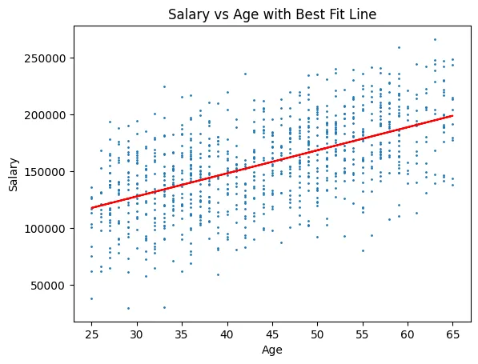
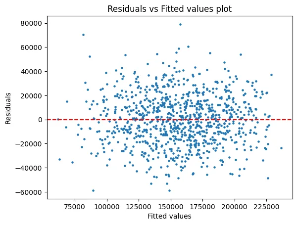

Back to all analyses
Salary regression
I used regression to examine which factors were associated with differences in salary.
- Python
- pandas
- statsmodels
- SciPy
Key results
r = 0.56correlation of salary and age, 95% CI 0.51 to 0.61
0.318 to 0.713R² for age alone versus the full model
+$1,996salary per extra year of age, other factors fixed
$148,207predicted salary at age 40, 95% prediction interval $84,125 to $212,289
Findings & method
What I found
- Age alone explains 31.8% of salary variation, at about $2,027 per year (p < 0.001).
- The full model raises that to 71.3% (adjusted 70.9%). Each rating point adds about $5,073.
- Degree, compared with an Associate’s degree: Bachelor’s +$7,047, Master’s +$12,790, Ph.D. +$18,870, and High School −$4,756. All are significant at 5%.
- Division, compared with Accounting: Operations is $31,380 lower (p < 0.001), Corporate $8,024 higher (p = 0.030), and Sales $7,304 lower (p = 0.030). Engineering and Human Resources are not significantly different.
- Gender: male employees earn about $8,537 more with the other factors held fixed (p < 0.001). This is observational data, so it points to a question worth investigating, not a cause.
- Diagnostics: the residual plot fans out as fitted salary rises, which signals non-constant variance. The Q-Q plot is mostly straight. My next step would be robust standard errors or a transformation.
Effect on salary, with 95% confidence intervals
Filled dots are significant at 5%. Degree is compared with an Associate’s degree, division with Accounting, and gender with female.


reg = smf.ols('Salary ~ Age', data=employees).fit()
prediction_interval = reg.get_prediction(X_pred).summary_frame(alpha=0.05)
reg = smf.ols('Salary ~ Gender + Age + Rating + Degree + Division', data=employees).fit()